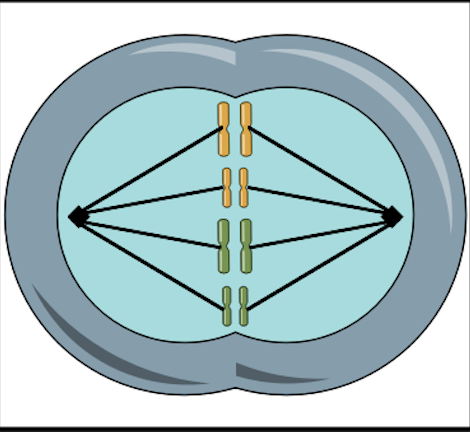

<Anafaza

Despre anafaza:
În anafază, cromatidele surori (partea fiecărui cromozom duplicat) se separă și sunt trase către polii opuși ai celulei de către contracția fibrelor fusului mitotic.
Această separare a cromatidelor asigură ca fiecare celulă fiică să primească un set complet de cromozomi, astfel încât numărul de cromozomi să fie păstrat.